Unitats organitzatives i GPOs
Unitats organitzatives (UO) a Active Directory
Les unitats organitzatives, o UO, són contenidors lògics dins d’un domini d’Active Directory que serveixen per organitzar i agrupar objectes com usuaris, grups, equips o altres UO. A diferència de la carpeta "Users", les UO permeten una administració més avançada i personalitzada dels recursos.
El seu principal avantatge és que permeten aplicar polítiques de grup (GPO) de forma independent, delegar permisos d’administració sobre una part concreta del domini i mantenir una estructura organitzada i jeràrquica, especialment en entorns amb molts usuaris o departaments.
Alguns beneficis de fer servir UO són:
- Aplicació de polítiques específiques a diferents grups d’usuaris o equips
- Delegació d’administració sense donar accés a tot el domini
- Millor organització dels recursos segons departaments, funcions o ubicacions
- Control més fi i segur de l’entorn de xarxa
Per crear una unitat organitzativa, obrim l’eina Usuaris i equips d’Active Directory. Després, fem clic dret sobre el nom del nostre domini i seleccionem Nou > Unitat organitzativa.
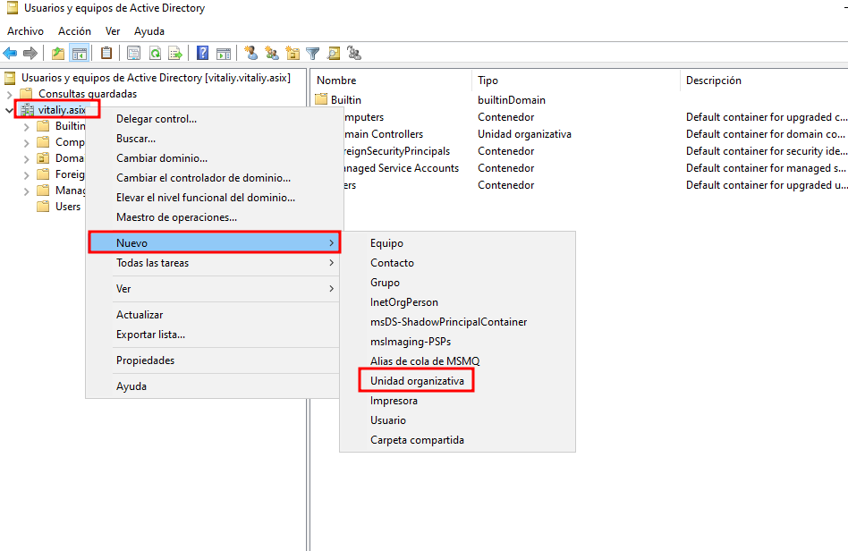
Dins d’una UO també es poden crear subunitats organitzatives, cosa que permet una segmentació encara més detallada. Això és especialment útil quan volem aplicar polítiques diferents a departaments específics o gestionar permisos de forma independent.
Per exemple, si volem desplegar una política de seguretat només per al departament de Comptabilitat, podem crear una UO principal anomenada Departaments, i dins d’ella una subUO anomenada Comptabilitat, on col·locarem els usuaris corresponents. D’aquesta manera, la política només afectarà aquest grup concret.
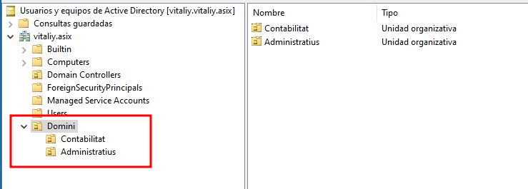
Dins d’aquestes UO, també podem crear usuaris i grups. Per exemple, podem crear dos grups: un anomenat Permissiva i un altre Restrictiva.
A continuació, creem dos usuaris i assignem cada un al seu grup corresponent. D’aquesta manera, podrem aplicar polítiques diferents segons el grup al qual pertanyin, donant més o menys permisos segons convingui.
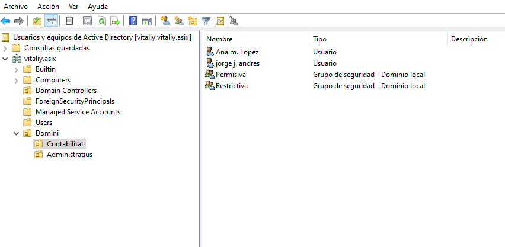
Configuració de GPOs
Què és una GPO?
Una GPO (Group Policy Object) és una eina que permet aplicar configuracions específiques a usuaris i equips dins d’un domini de Windows. Amb les GPOs, els administradors poden controlar múltiples aspectes del sistema, com la configuració del sistema operatiu, l’accés a funcionalitats, restriccions de seguretat, scripts d’inici de sessió, i molt més.
Són essencials per mantenir una gestió centralitzada i coherent dels equips en entorns d’empresa o xarxes educatives.
Desactivar l'accés a la línia de comandaments (CMD) mitjançant GPO
Una de les mesures de seguretat més habituals és evitar que els usuaris no administradors puguin accedir a la CMD (símbol del sistema) o a l'editor del registre. Això es pot aconseguir fàcilment amb una GPO.
Obrir la consola de GPO:
Des del controlador de domini, obre la consola gpmc.msc (Consola de Gestió de Polítiques de Grup).
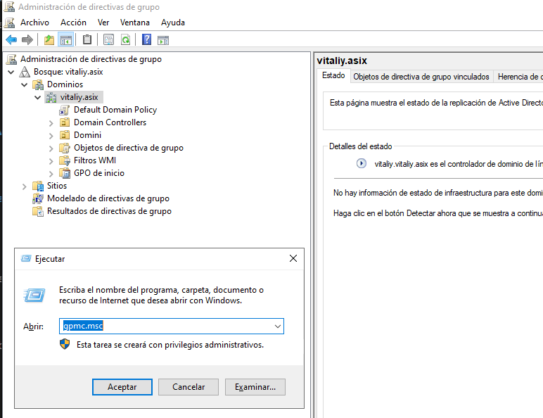
Crear o editar una GPO:
Vincula la GPO a una Unitat Organitzativa (OU) concreta (per exemple, on hi ha els usuaris).
Fes clic dret sobre la OU o el domini i selecciona:
Crear una GPO en aquest domini i vincular-la aquí → assigna-li un nom, com ara Desactivar CMD.
Editar la GPO:
Fes clic dret sobre la nova GPO i selecciona Editar.
Navega fins la ruta següent:
Configuració de l'usuari → Polítiques → Plantilles administratives → Sistema
Activa la directiva "Impedir l'accés al símbol del sistema":
Busca la política "Impedir l'accés al símbol del sistema" i fes doble clic per editar-la.
Selecciona Habilitada.
A la part inferior, pots marcar també l'opció per desactivar l'execució de scripts de CMD (com ara fitxers .bat o .cmd) si vols més control.
També pots activar la política "Impedir l'accés a l'Editor del Registre" si vols evitar modificacions manuals del sistema.
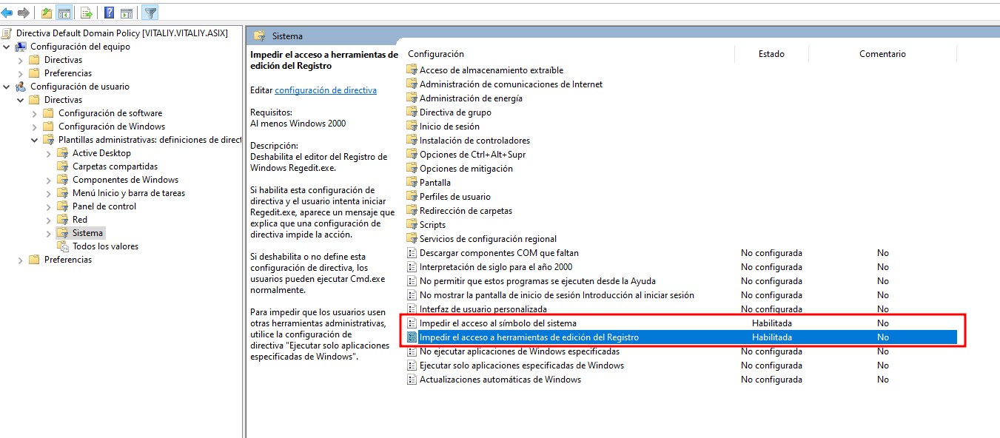
Ho comprovem.
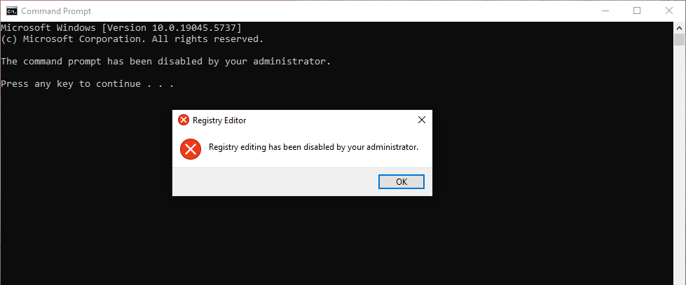
Modificació de la política de contrasenyes al domini
Les polítiques de contrasenya es gestionen a través de les Directives de grup (GPO) i, per defecte, s’apliquen a nivell de domini mitjançant la política predeterminada.
Per accedir a la configuració, obrim l’eina "Administració de polítiques de grup" (gpmc.msc).
A la part esquerra de la consola, despleguem el nostre domini i localitzem la política anomenada Default Domain Policy. També hi podrem veure qualsevol GPO personalitzada que hàgim creat prèviament, com per exemple per a UO com Administratius o Comptabilitat.
A partir d’aquí, podem optar per editar la política predeterminada o bé crear una de nova i aplicar-la sobre una UO específica.
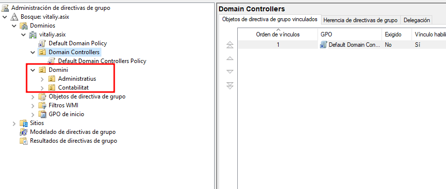
Fem clic dret sobre la política que volem editar i seleccionem l’opció Edita per obrir l’editor de polítiques de grup.
Dins l’editor, accedim a:
Configuració de l’equip > Configuració de Windows > Configuració de seguretat > Polítiques de compte > Política de contrasenya
En aquesta secció es poden modificar els valors relacionats amb la seguretat de les contrasenyes. Les opcions més habituals són:
- Longitud mínima de la contrasenya
- Requeriment de complexitat (majúscules, minúscules, números i símbols)
- Caducitat de la contrasenya (nombre de dies abans que caduqui)
- Temps mínim abans de poder canviar-la novament
- Nombre de contrasenyes guardades a l’historial (per evitar reutilització)
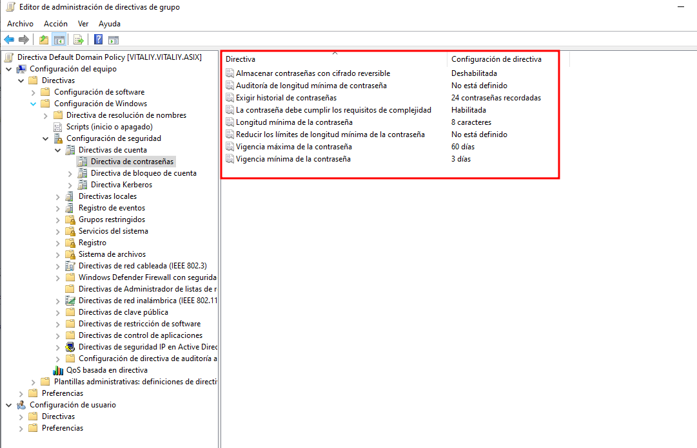
Un cop modificades les opcions segons les necessitats, tanquem l’editor i deixem que la política s’apliqui automàticament. També podem forçar-ne l'aplicació immediata amb:
gpupdate /force
Aquestes polítiques s'aplicaran a tots els usuaris que depenguin d'aquesta GPO, i es pot comprovar el seu efecte en intentar establir o modificar una contrasenya.
Prova de contrasenya
Per comprovar si la política de contrasenyes s’aplica correctament, podem forçar el canvi de contrasenya d’un usuari del domini. Quan aquest iniciï sessió, se li demanarà que estableixi una contrasenya nova.
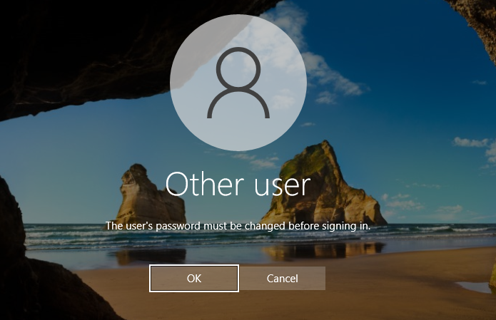
S’introdueix una nova contrasenya per part de l’usuari.
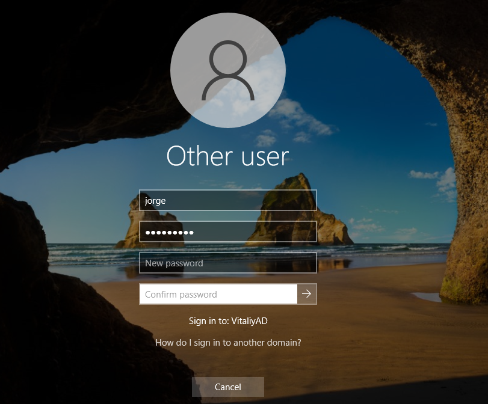
Si la contrasenya no compleix amb els requisits definits a la política (per exemple, no té la longitud mínima o manca de complexitat), apareixerà un missatge d’error indicant que no compleix amb la política establerta.
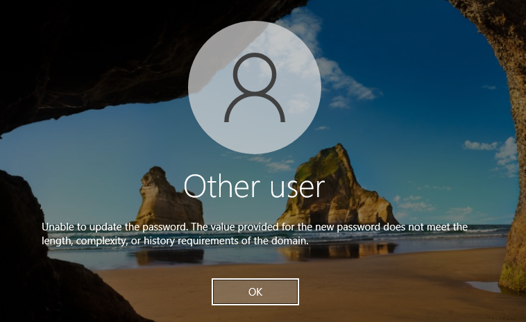
En canvi, si la contrasenya compleix tots els criteris configurats, es mostrarà un missatge confirmant que s’ha canviat correctament.
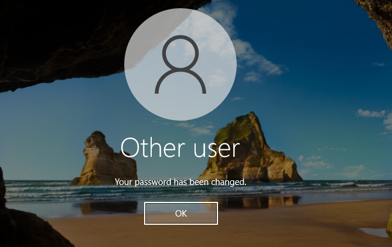
Compartir una carpeta o unitat de xarxa via GPO
Per compartir una carpeta o una unitat de xarxa amb els usuaris del domini de forma automàtica, es pot fer de manera eficient mitjançant una GPO (Group Policy Object), sense necessitat d’utilitzar scripts.
Compartir la carpeta
Primer de tot, cal crear el directori (per exemple: C:\Share) i compartir-lo per xarxa. Fes clic dret sobre la carpeta, entra a Propietats, ves a la pestanya Compartir i selecciona Compartir. Dona permisos als usuaris o grups corresponents, com ara Domini\Usuaris.
Muntar la unitat compartida amb GPO
Des del controlador de domini, obre la consola de gestió de polítiques de grup (gpmc.msc), crea o edita una GPO existent i navega fins a:
Configuració de l'usuari → Preferències → Configuració de Windows → Unitat de xarxa
- Fes clic dret i selecciona Nou → Unitat
- Acció: Crear
- Ubicació:
\\VITALIY\Share - Lletra de la unitat: Z:
Marca l’opció Reconnectar si vols que es mantingui després de reiniciar
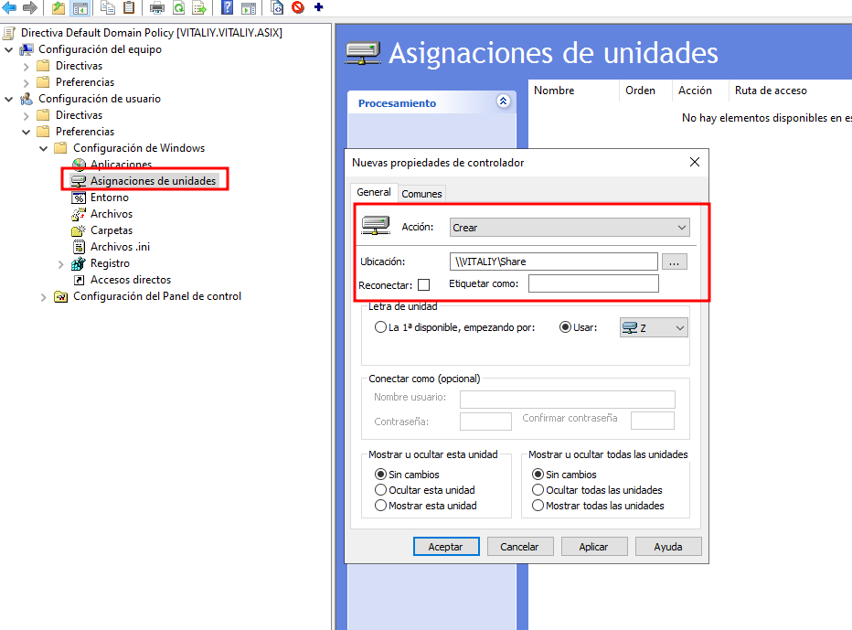
Si ho hem fet correctament, la unitat apareixerà amb una icona de carpeta i un triangle verd, indicant que s'ha aplicat correctament la política:
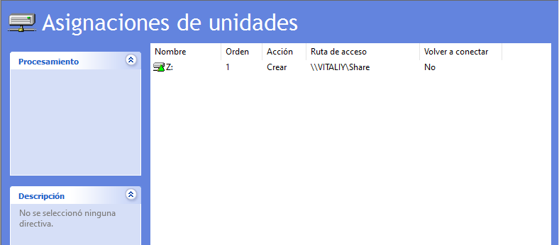
Ara només cal iniciar sessió amb un usuari en un equip unit al domini, i veurem que la unitat es munta automàticament:
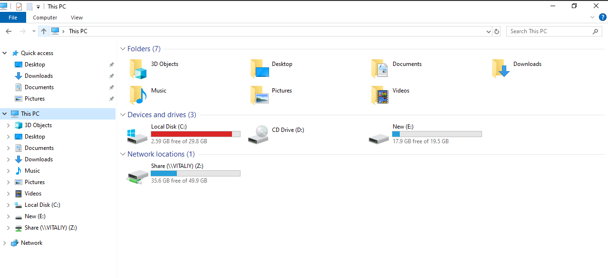
GPO vs Script .bat
| Aspecte | GPO (Preferències) | Script .bat |
|---|---|---|
| Aplicació Automàtica | ✅ Sí, controlat per domini | ⚠️ Sí, però depèn de l’usuari/script |
| Gestió Centralitzada | ✅ Totalment centralitzada | ⚠️ Manual o semi-centralitzada |
| Manteniment | ✅ Fàcil d’actualitzar | ❌ Pot ser més difícil d’escanejar |
| Control d’errors | ✅ Visual i gestionable | ❌ Cap feedback visual, només consola |
| Reconnectar després de reinici | ✅ Opció integrada | ❌ Cal afegir /persistent:yes |
Per què és millor utilitzar GPO?
És més segur i net: no depens de fitxers externs .bat.
És visual i fàcil de mantenir: qualsevol administrador pot veure i modificar la configuració des de la consola.
Evita errors comuns dels scripts: com errors de ruta o problemes de permisos.
S’aplica automàticament i de manera transparent per a l’usuari.
Utilitzar les Preferències de GPO per muntar unitats de xarxa és, avui dia, la millor pràctica recomanada per entorns Windows amb Active Directory.
Restringir l'accés a usuaris fora del domini
Per garantir que només els usuaris del domini puguin iniciar sessió en els equips del domini, pots utilitzar una Política de Grup (GPO) per controlar qui pot iniciar sessió localment.
Aquesta mesura de seguretat és molt útil per evitar l'accés amb comptes locals o no autoritzats, i és especialment recomanable en entorns corporatius o educatius on es vol un control total de l'accés.
Configuració via GPO
Obre la consola gpmc.msc al servidor de domini i edita o crea una GPO vinculada a la Unitat Organitzativa (OU) on hi ha els ordinadors afectats.
Ves a:
- Configuració de l’equip → Configuració de Windows → Configuració de seguretat → Polítiques locals → Assignació de drets d'usuari → Permetre l'inici de sessió local
Defineix la configuració i afegeix només aquest grup:
- DOMINI\Usuarios del dominio
Exemple:
- VitaliyAD\Usuarios del dominio
Això assegura que només els usuaris autenticats del domini poden iniciar sessió als equips.
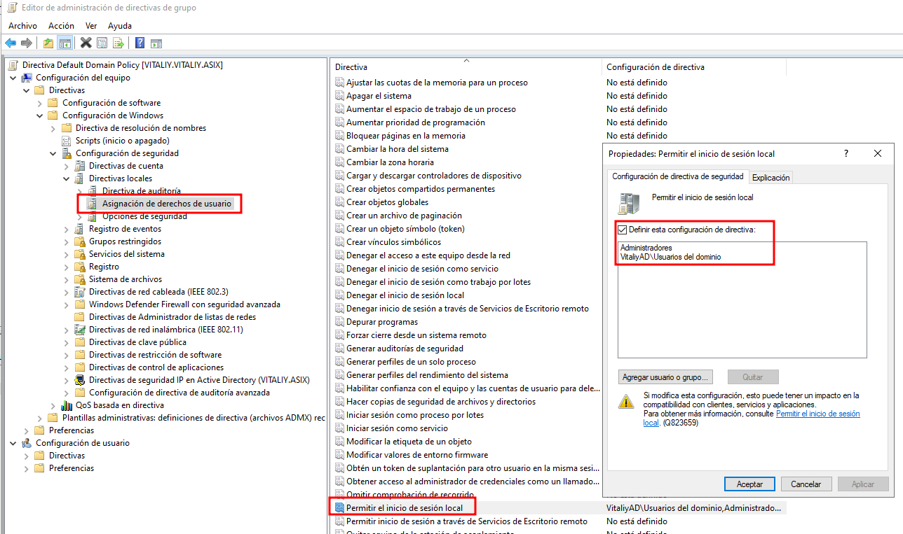
Què passa si un usuari local intenta accedir?
Quan un usuari local o extern intenta iniciar sessió, rebrà un missatge d'error informant que no té permisos per iniciar sessió localment.
Això evita intents d'accés no autoritzats amb comptes com .\usuari, .\Administrador, o altres usuaris que no formen part del domini.
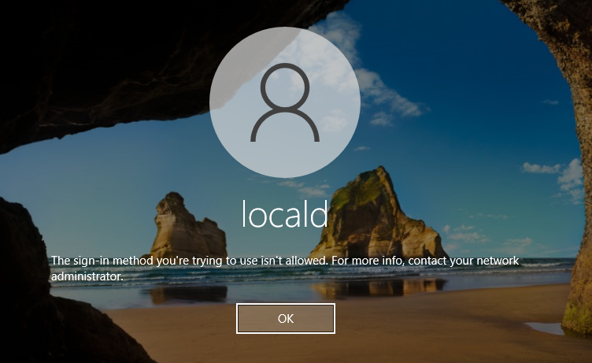
Recomanació extra (opcional)
Per reforçar encara més la seguretat, pots configurar també la política:
Denegar l’inici de sessió local
I afegir-hi els grups:
- BUILTIN\Users
- BUILTIN\Guests
Això afegeix una capa de protecció extra per evitar que usuaris locals intentin accedir.
Amb aquesta configuració, t’assegures que només els usuaris del domini poden accedir als equips gestionats, i redueixes els riscos de seguretat associats a l'ús de comptes locals.
GPO per controlar l’accés a perifèrics USB, CD, etc.
Una de les pràctiques més habituals en entorns empresarials és restringir l’ús de dispositius externs com memòries USB, discos durs, CDs o DVDs per motius de seguretat i prevenció de filtració de dades.
Per aplicar aquesta mesura, crearem una GPO específica vinculada a una unitat organitzativa (OU) o directament al domini, segons convingui.
Creació de la GPO
Obrim la consola de Gestió de Polítiques de Grup (gpmc.msc) al controlador de domini.
Fem clic dret sobre el nom del domini o la UO on volem aplicar la política i seleccionem:
"Crear una GPO en aquest domini i vincular-la aquí..."
Assignem un nom significatiu a la política, com per exemple ControlUSB.
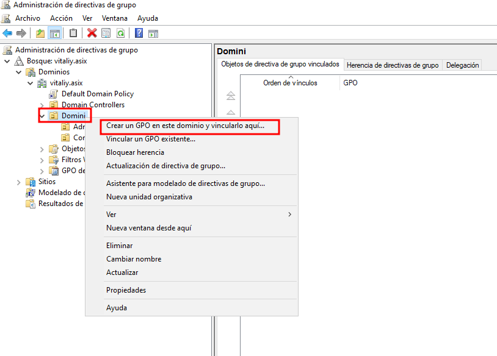
A continuació, introduïm el nom de la nova GPO:
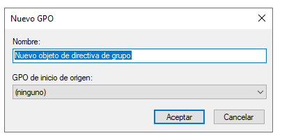
Configuració de la política
Un cop creada, fem clic dret sobre la nova GPO i seleccionem Editar. Dins de l’editor, naveguem a la següent ruta:
Configuració de l’equip → Polítiques → Plantilles administratives → Sistema → Accés a l’emmagatzematge extraïble
Aquí podem configurar opcions com:
- Desactivar l'accés a totes les unitats de memòria extraïble
- Desactivar l’escriptura a dispositius USB
- Bloquejar la lectura de CD/DVD
- Permetre només lectura
Aquestes opcions permeten personalitzar el nivell de restricció segons les necessitats de l’organització.
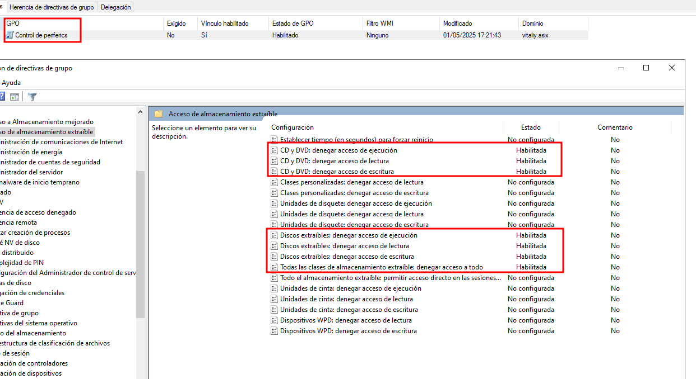
Recomanació
En entorns empresarials o educatius, és molt recomanable habilitar aquestes polítiques per garantir la seguretat dels equips, evitar la còpia no autoritzada de dades i reduir el risc d’infeccions per malware provinents de dispositius externs.
Instal·lació de programes via GPO
Instal·lació de Google Chrome mitjançant GPO
Primer de tot, cal descarregar el paquet d’instal·lació de Google Chrome amb extensió .msi (molt important que no sigui .exe).
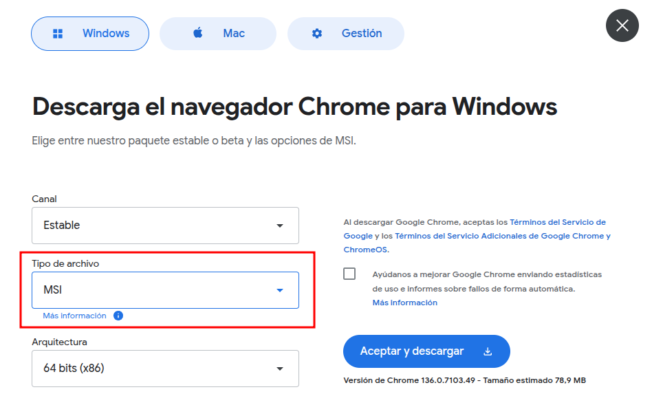
Aquest arxiu s’ha de col·locar dins d’una carpeta compartida accessible per a tots els equips del domini. Assegura’t que els permisos de la carpeta permeten lectura per als equips o usuaris del domini.
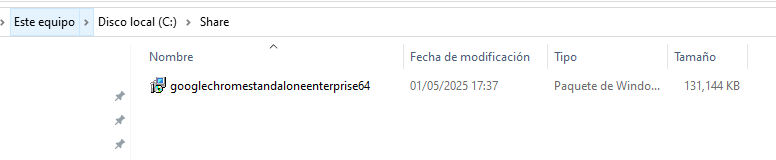
Creació de la GPO
Crea una nova GPO (per exemple, amb el nom "Instal·lar Chrome") i vincula-la a la Unitat Organitzativa (UO) on es troben els equips als quals vols instal·lar el programa.
Edita la GPO i navega a:
Configuració de l’equip → Polítiques → Configuració del programari → Instal·lació de programari
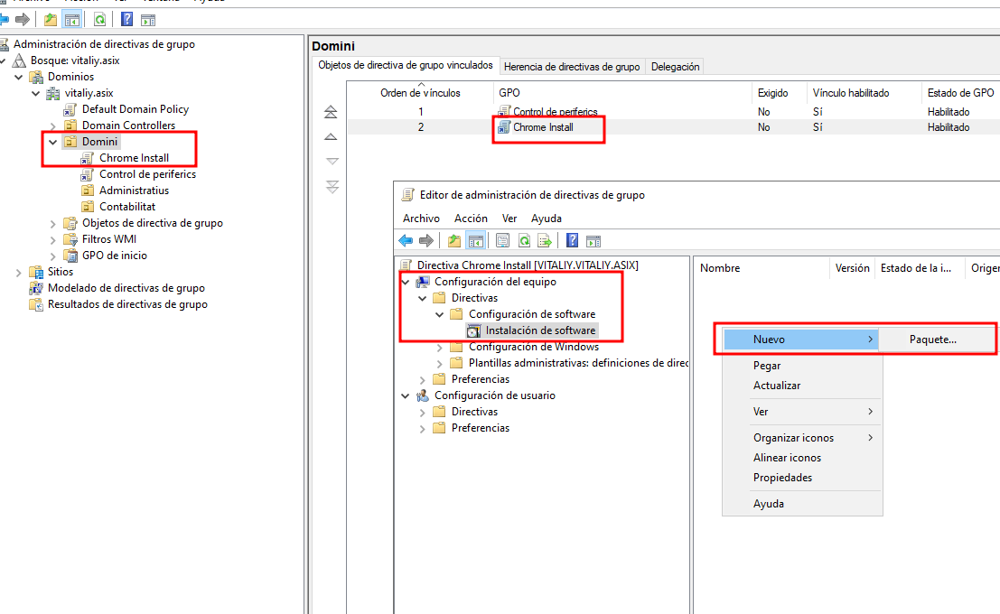
Afegeix un nou paquet i introdueix la ruta completa UNC on tens el fitxer .msi, per exemple:
\\VITALIY\Share\googlechromestandaloneenterprise64.msi
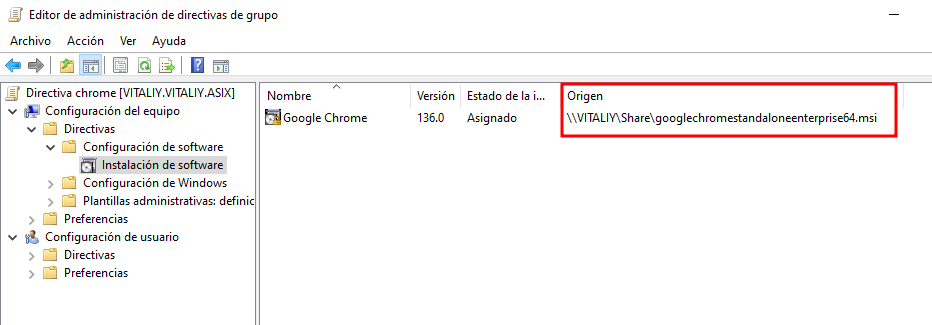
NOTA: És molt important que la ruta comenci per \\NOM_DEL_SERVIDOR\... i no utilitzis rutes locals com C:\..., ja que els equips del domini no tindran accés a rutes locals del servidor.
Requisits importants
- L’equip ha d’estar unit al domini.
- El fitxer
.msiha d’estar en una ubicació compartida i accessible des de la xarxa (amb permisos mínims de lectura). - Aquesta instal·lació s’aplica a nivell d’equip, no d’usuari.
- La instal·lació es farà automàticament durant l’arrencada del sistema, abans de la pantalla d’inici de sessió.